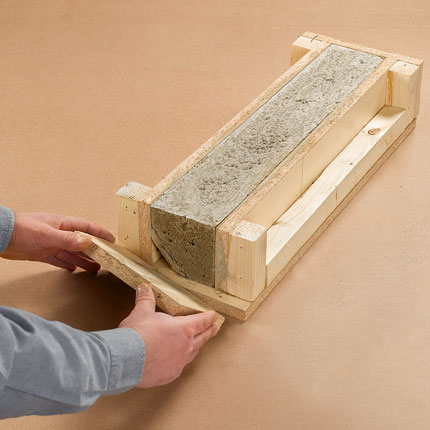

Project
Learning Focus
By the end of this toolkit, you will be able to:
- Cast concrete beams safely: Follow proper procedures for mixing, placing, and compacting concrete.
- Manage curing: Maintain proper curing conditions for strength development.
- Conduct destructive testing: Set up test equipment, apply loads systematically, and observe failure modes.
- Collect and analyse data: Record loads, deflections, and failure characteristics, then analyse results.
- Evaluate performance: Compare predicted vs actual performance, identify failure causes, and suggest improvements.
Timing: Cast your beam in Week 1-2, allow 7+ days for curing, then test in Week 3-4. Complete your beam folio by the end of Week 4. This is your main Term 2 project.